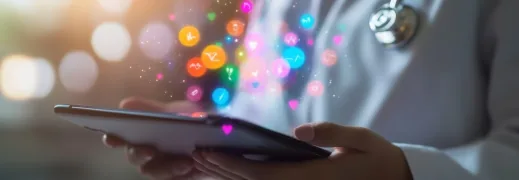
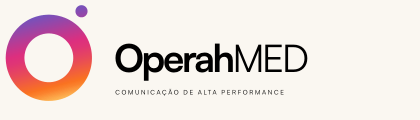

Comunicação médica de alta performance

A OperahMED une inteligência de tráfego pago, experiência de agência e visão de negócio para transformar investimento em oportunidades reais de crescimento para profissionais da saúde.
Saiba maisCuidar, transformar e evoluir.
Essa é a nossa história.
Cinco anos não se constroem sozinhos. São feitos de pessoas que confiaram, cuidaram, transformaram e caminharam com a Perfeita Plástica. Celebrar cinco anos é olhar para tudo o que vivemos, para as pessoas que fizeram parte dessa história e para tudo o que ainda vamos construir juntos.


Alta gastronomia.
Música ao vivo.
Experiências.




A OperahMED une inteligência de tráfego pago, experiência de agência e visão de negócio para transformar investimento em oportunidades reais de crescimento para profissionais da saúde.
Saiba maisO Hospital Santa Rita oferece atendimento médico humanizado e de alta qualidade, com estrutura hospitalar completa, pronto atendimento 24 horas e centro médico de especialidades.
O Hospital Santa Rita é reconhecido na área da saúde pela sua eficiência e humanização, reunindo serviços, especialidades e conteúdos voltados à informação e ao cuidado dos seus pacientes. Sua presença digital também reforça esse compromisso através de conteúdos sobre a saúde, videocasts e canais de informação.
É com uma comunicação responsável, próxima e humana que a parceria com a Perfeita Plástica ganha força. Juntos, levamos a mensagem para encontrar as pessoas certas, gerando ainda mais conexão.
Essa parceria representa também troca de experiências. Cada projeto nasce da construção conjunta e da busca por soluções para fortalecer a presença do Hospital Santa Rita e aproximá-lo ainda mais de seu público.
A Laser São Paulo apoia médicos, clínicas e profissionais da saúde com locação de equipamentos e tecnologia para procedimentos e tratamentos.
A Scitech desenvolve tecnologias e dispositivos médicos para diferentes especialidades, contribuindo com soluções voltadas à saúde e à qualidade de vida.
A Scitech Medical atua no desenvolvimento de dispositivos médicos minimamente invasivos e está presente em mais de 45 países. São soluções voltadas às áreas de cardiologia intervencionista, endovascular, endoscopia e endocirurgia. Uma empresa que também mantém uma frente dedicada à pesquisa e tecnologia e ajudando na evolução do setor.
É nesse cenário de inovação e crescimento que a parceria com a Perfeita Plástica ganha força. O trabalho conjunto aproxima estratégia e comunicação dos objetivos da marca, criando projetos alinhados aos nossos desafios, momentos e trajetória.
Mais do que desenvolver ações, trocamos conhecimento, confiança e construção conjunta. Cada novo projeto é uma oportunidade de transformar ideias em estratégias e contribuir para fortalecermos nossa presença e conexão com o mercado.
A Biobela desenvolve cintas modeladoras, pós-cirúrgicas e estéticas pensadas para oferecer compressão, conforto e suporte durante a recuperação.
Parcerias de verdade acontecem quando empresas compartilham mais do que objetivos: compartilham confiança, visão e vontade de crescer juntas.
É assim que vem sendo construída a relação entre a Perfeita Plástica e a Biobela Cintas. Com proximidade, troca e colaboração, as duas marcas transformam desafios em oportunidades e ideias em novos caminhos. Especialista em modeladores, pós-cirúrgicos, shapewear e sutiãs, a Biobela reúne produtos que aliam conforto, sustentação, modelagem e confiança, acompanhando diferentes momentos da jornada de suas clientes.
Ao lado da Perfeita Plástica, soma estratégia e comunicação para criar soluções que fortalecem sua presença e aproximam a Biobela do seu público. Quando duas marcas compartilham a mesma visão, cada novo projeto ganha um significado maior e passa a fazer parte de uma história construída juntas.
A Silimed oferece linhas de implantes mamários, faciais e de contorno corporal, além de produtos para urologia e expansão de tecidos.
Toda grande trajetória é construída ao longo do tempo. Com visão, inovação e parceiros que compartilham o mesmo compromisso com a evolução.
Desde 1978, a Silimed constrói sua história investindo em ciência, tecnologia e desenvolvimento de produtos para o mercado de implantes médicos. Uma jornada marcada pela inovação e que também encontrou na Perfeita Plástica parceria para um trabalho próximo e alinhado para transformar desafios em oportunidades.
Uma parceria de verdade vai além dos projetos entregues. Ela nasce da confiança, cresce na troca e se fortalece nos resultados compartilhados.
Para a Perfeita Plástica fazer parte dessa história é entender a essência de uma marca, acompanhar sua evolução e contribuir para que ela siga avançando.
A Biolaser desenvolve tecnologias a laser para cirurgia plástica, tratamentos de cicatrizes e recuperação no pós-operatório.
A Biolaser atua com tecnologias a laser voltadas à cirurgia plástica e aos cuidados com a pele e os tecidos, oferecendo soluções que contribuem para procedimentos estéticos, tratamentos de cicatrizes e recuperação no pós-operatório. Uma atuação que une tecnologia, precisão e inovação para acompanhar a evolução da medicina.
É nesse cenário de tecnologia e crescimento que a parceria com a Perfeita Plástica ganha força. O trabalho conjunto aproxima estratégia e comunicação dos objetivos da marca, criando projetos alinhados aos seus desafios, momentos e trajetória.
Mais do que desenvolver ações, trocamos conhecimento, confiança e experiências. Cada novo projeto é uma oportunidade de transformar ideias em estratégias e fortalecer a presença da Biolaser, aproximando sua tecnologia dos profissionais e do mercado.
Quando diferentes expertises trabalham na mesma direção, a tecnologia encontra novas formas de chegar mais longe.